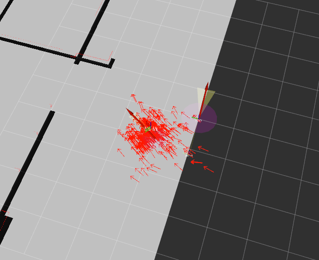

LiDARとAMCLを用いた自己位置推定¶
このページではLiDARとAdaptive Monte Carlo Localization (AMCL)を用いて自己位置推定を行います。
自己位置推定用の地図を作る¶
自己位置推定を行うには事前に地図を用意する必要があります。 事前に用意した地図がない場合には、以下のどちらかの方法で地図を作成してください。
- Gazebo Pluginを使って地図を作成する
- Gazebo Pluginを使用する
- Gmappingを使って地図を生成する
- gmappingを使用する
AMCLを使って自己位置推定を行う¶
モンテカルロ位置推定（Monte Carlo Localization）は、パーティクルフィルタを用いて自己位置推定を行う手法です。 このアルゴリズムではロボットの位置の確率分布をパーティクルの分布で表現し、その分布を、観測した情報を元に更新することで自己位置の推定を行います。
適応的モンテカルロ位置推定（Adaptive Monte Carlo Localization）は、モンテカルロ位置推定で用いる粒子の数を動的に調整することのできるアルゴリズムです。
今回はROSの amclパッケージ を使います。 また、前節で作成した地図情報を利用するために、 map_serverパッケージ も使用します。
map_serverを使って地図情報をパブリッシュする¶
amclは /map トピックにパブリッシュされている地図情報を用いて自己位置推定を行うので、前節で作成した地図の情報をmap_serverを用いてパブリッシュしてやる必要があります。
以下のコマンドで地図の情報をパブリッシュするノードを起動します。 map.yamlは地図画像と一緒に生成される設定ファイルです。
rosrun map_server map_server map.yaml
Rvizを起動して /map トピックを表示すれば以下の画像のような地図が表示されます。

地図が表示されない場合はGlobal OptionのFixed Frameが map になっているか確認してください。
amclノードを起動する¶
次にamclノードを起動するためのLaunchファイルを書きます。
amclノードには多くのパラメータがあり、パラメータのチューニングによって自己位置推定の精度は影響を受けます。
pr2_navigationパッケージの amcl_node.xml など、既存のLaunchファイルを参考にするとよいでしょう。
このLaunchファイルでは、レーザースキャンのトピックが base_scan になっているので、使用する場合は自分の使うセンサの設定に合わせてトピック名を変更しましょう。
また、base_frame_idとodom_frame_idも自分の使用するロボットの構成と同じように変更する必要があります。
amclの各パラメータとその解説は amclのROS Wikiページ にあるのでパラメータをチューニングする際には参考にしてください。
map_serverの起動を含めたlaunchファイルは以下のとおりです。
1 2 3 4 5 6 7 8 9 10 11 12 13 14 15 16 17 18 19 20 21 22 23 24 25 26 27 28 29 30 31 32 33 34 35 36 37 38 39 40 41 42 43 | <launch>
<node name="map_server" pkg="map_server" type="map_server" args="$(find px4_sim_pkg)/map/willow_garage.yaml" />
<arg name="use_map_topic" default="true"/>
<node pkg="amcl" type="amcl" name="amcl">
<remap from="scan" to="/laser/scan" />
<param name="use_map_topic" value="$(arg use_map_topic)"/>
<!-- Publish scans from best pose at a max of 10 Hz -->
<param name="base_frame_id" value="base_link"/>
<param name="odom_model_type" value="omni"/>
<param name="odom_alpha5" value="0.1"/>
<param name="transform_tolerance" value="0.2" />
<param name="gui_publish_rate" value="10.0"/>
<param name="laser_max_beams" value="30"/>
<param name="min_particles" value="500"/>
<param name="max_particles" value="5000"/>
<param name="kld_err" value="0.05"/>
<param name="kld_z" value="0.99"/>
<param name="odom_alpha1" value="0.2"/>
<param name="odom_alpha2" value="0.2"/>
<!-- translation std dev, m -->
<param name="odom_alpha3" value="0.8"/>
<param name="odom_alpha4" value="0.2"/>
<param name="laser_z_hit" value="0.5"/>
<param name="laser_z_short" value="0.05"/>
<param name="laser_z_max" value="0.05"/>
<param name="laser_z_rand" value="0.5"/>
<param name="laser_sigma_hit" value="0.2"/>
<param name="laser_lambda_short" value="0.1"/>
<param name="laser_lambda_short" value="0.1"/>
<param name="laser_model_type" value="likelihood_field"/>
<!-- <param name="laser_model_type" value="beam"/> -->
<param name="laser_likelihood_max_dist" value="2.0"/>
<param name="update_min_d" value="0.2"/>
<param name="update_min_a" value="0.5"/>
<param name="odom_frame_id" value="odom"/>
<param name="resample_interval" value="1"/>
<param name="transform_tolerance" value="0.1"/>
<param name="recovery_alpha_slow" value="0.0"/>
<param name="recovery_alpha_fast" value="0.0"/>
</node>
</launch>
|
PX4 SITLシミュレータを起動する¶
最後に、PX4 SITLシミュレータを起動するLaunchファイルを作成します。
内容は GPSを用いた自律飛行 で使用した mymodel_sitl_tf.launchとほとんど同じですが、 odom から map へのTFをパブリッシュするノードをなくしています。
amclノードは、 map フレームからロボットのベースフレーム（今回は base_link ）へのTFを計算しますが、実際にブロードキャストするのは map からオドメトリのベース（今回は odom ）へのTFです。
今回はamclのブロードキャストする map から odom へのTFを使用するので、他のノードが map から odom へのTFをブロードキャストしないようにします。
オドメトリは車輪の回転数などから計算され、自己位置推定に用いられますが、スリップや外乱などによって誤差が蓄積するため、センサ情報を用いて補正する必要があります。amclノードは、地図とセンサ情報を用いてこの誤差を推定し、 map から odom へのTFとしてブロードキャストします。
また、今回は搭載したLiDARのデータを用いて自己位置推定をするので、 base_link から lidar_link へのTFもブロードキャストする必要があります。

1 2 3 4 5 6 7 8 9 10 11 12 13 14 15 16 17 18 19 20 21 22 23 24 | <launch>
<node pkg="tf" name="base2lidar" type="static_transform_publisher" args="0 0 0.1 0 0 0 base_link lidar_link 100"/>
<arg name="vehicle" default="iris_2d_lidar"/>
<arg name="world" default="$(find px4_sim_pkg)/worlds/willow_garage.world" />
<arg name="sdf" default="$(find px4_sim_pkg)/models/iris_2d_lidar/model.sdf" />
<arg name="verbose" default="false"/>
<arg name="debug" default="false"/>
<include file="$(find px4)/launch/mavros_posix_sitl.launch" >
<arg name="sdf" value="$(arg sdf)" />
<arg name="vehicle" value="$(arg vehicle)" />
<arg name="verbose" value="$(arg verbose)" />
<arg name="debug" value="$(arg debug)" />
<arg name="world" value="$(arg world)" />
</include>
<param name="/mavros/local_position/tf/send" type="bool" value="true" />
<param name="/mavros/local_position/frame_id" type="str" value="odom" />
<param name="/mavros/local_position/tf/frame_id" type="str" value="odom" />
<param name="/mavros/setpoint_velocity/mav_frame" type="str" value="BODY_NED" />
</launch>
|
実行する¶
最初にPX4シミュレータを起動します。
roslaunch px4_sim_pkg mymodel_sitl_amcl.launch
Gazeboが起動したら、次にmavteleopノードを起動します。
roslaunch px4_sim_pkg mavros_teleop.launch
ゲームパッドからドローンを操作できるようにするために、離陸させてからモードを変更します。
rosrun mavros mavsys mode -c OFFBOARD
最後にamclノードを起動します。
roslaunch px4_sim_pkg amcl.launch
Rvizを起動して /map トピックを表示します。
また、 /particlecloud トピックを表示すると、推定された姿勢のパーティクルが表示されます。
rviz
Rvizを起動したら、2D Pose Estimateを選択して、初期位置と姿勢を以下の画像のようにして与えてやります。 あとは、ゲームパッドを使ってドローンを移動させてみましょう。

最初は以下の画像のように姿勢（赤矢印）が分布していますが、
データを観測するにつれて姿勢の分散は小さくなっていきます。

以下の動画では、途中で壁にぶつかってしまっていますが、影響なく位置推定ができていることがわかります。